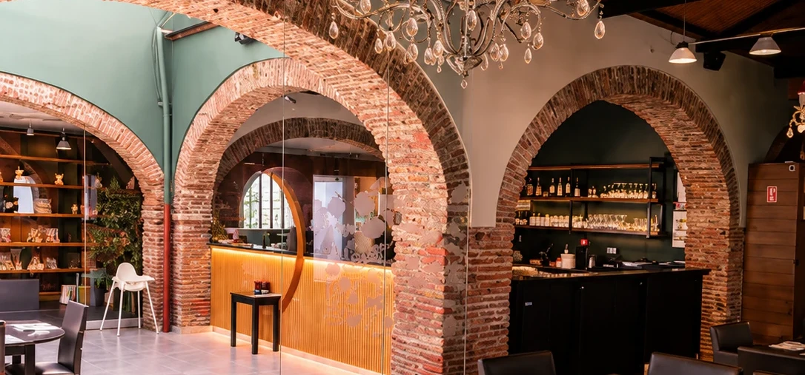

- 1
Leia o QR
da sua mesa - 2
Escolha
os pratos - 3
Envie o pedido
para a cozinha - 4
Acompanhe o seu pedido
em tempo real
Galeria


A nossa casa
em Vila Real de Santo António
Av. da República, 8900-206
Vila Real de Santo António